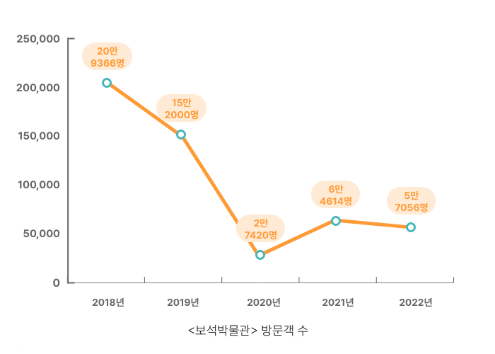
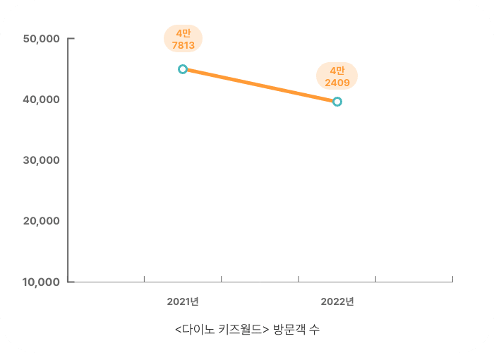
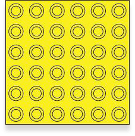
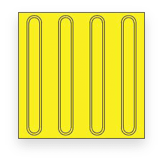
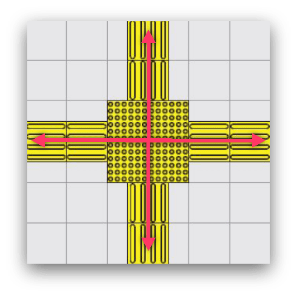
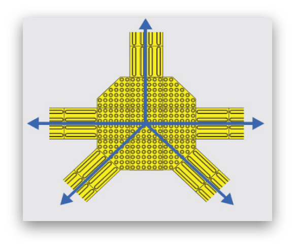
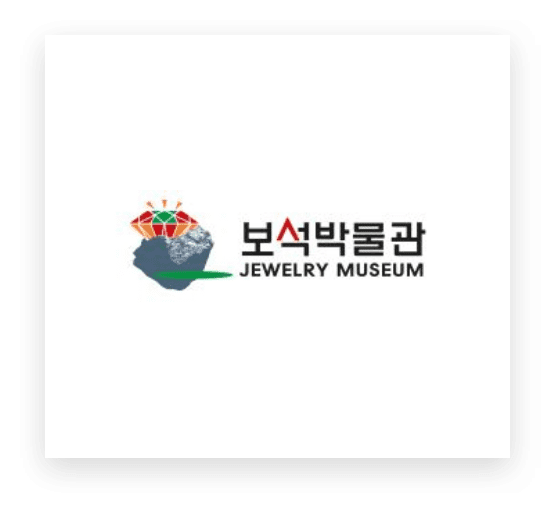
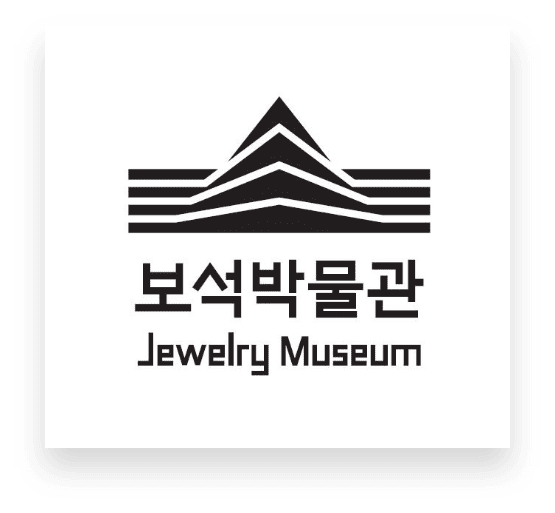

모든 이들을
반짝이며 맞는
보석박물관
반짝이며 맞는
보석박물관
다정한 도시
4
익산 보석박물관
공공디자인으로 행복한 공간 만들기
Scroll Down
Swipe Down
1400년 전
백제 무왕의
왕궁터에서 보듯,
전라북도 익산은
‘보석의 도시’입니다.
익산은
화려한
금·은 세공기술을
자랑했어요
1970년대 중반
조성된
귀금속
보석산업단지는
1990년대까지
전성기를 누렸죠
한때 보석세공사만
1만2000여명에 달했어요
하지만,
1990년대 중후반부터
인건비가 저렴한
중국과 동남아시아로
보석산업이
이전했어요
지금 익산 보석산업은
명맥만 잇는
정도지만,
익산의 보석산업과
보석 관련
문화를 되살리려는,
움직임이
일고 있습니다
익산
왕궁보석테마관광지
에는
11만여점의
진귀한 보석을
소장한
보석박물관이
있어요
보석박물관 옆에는
보석판매센터
주얼 팰리스
와
공룡 테마놀이공원
다이노 키즈월드,
가족공원
등의 관광지가
있어요
코로나19 이후로
관광객이
줄어들긴 했지만
매년 10만명의
관광객이
이 일대를 찾아요


한슬희 익산시 주무관은 말해요
“
아이부터 어르신까지
다양한 계층이
이곳 왕궁보석테마관광지를
찾아요
연령이나 성별,
장애의 유무와
관계없이
누구에게나
편안한
보편적 디자인(Universal Design)
이 필요했죠
”
보편적 디자인 중 하나로,
새로운 시각장애인용
‘점자 블록’을
전국에서 처음으로
보석박물관에
선보였어요
2021년 ‘공공디자인 국민 아이디어’
공모전에서
대상을 받은
‘팔각 점자형 보도블록’을
시범설치
한거에요

1960년대 일본에서
만든 점자 블록은
1960년대 일본에서
만든 점자 블록은
“잠깐 멈추세요”라는
의미를 담은
점형 블록
과

“여기를 따라가세요”라는
의미의
“여기를 따라가세요”라는
의미의
선형 블록
이 있어요
길이 나눠지는
지점에는
점형 블록을
설치하죠
하지만, 점형 블록은
사각형 모양만
있어요
90도로 나눠지는,
4개 방향의 길에는
문제가 없지만,
사선 방향으로
나눠지는 길을
나타내기엔
부족하죠


점형 블록을
팔각형 모양으로
만들면
최대 8개
방향으로
시각장애인을
유도할 수
있게 돼요
류명현 전북 시각장애인협회
익산지회장은 말해요.
“
세상에는 사거리만
있는 게
아니잖아요
오거리·육거리도
많죠
사선으로
뻗은 길에
이걸 설치하면,
좀 더 편하게
다닐 수
있을 거 같아요
서울 사는
지인도
팔각형 모양의
블록은
이용해 본 적이
없대요
팔각 점형 블록은
그 효과성을
추가로 검증한 뒤
관련된
법령 개정을
시도할 계획이에요
”
왕궁보석테마관광지는
순차적으로
개발됐어요
2002년 보석박물관이
세워진 뒤
2010년 주얼 팰리스,
2021년 다이노 키즈월드가
들어섰어요
관광지를 연계해
이곳을 찾는
이들이 많아지도록요
하지만 시설이
차례로
들어서다 보니,
안내 체계가
통일되지
못했어요
형태와 색상,
규격이 각기 다른
실내·외
안내 체계를
통일된 콘셉트로
다시 만들었어요
왕궁보석테마관광지
내에 있는
여러 시설들을
쉽게 찾아갈 수
있도록요
보석박물관 전용
픽토그램(그림문자·pictogram)도
만들었어요
반짝반짝 빛나는
보석의 형상을
담아서요
그림만으로
정보를 제공하는
픽토그램은
보편적 디자인 중
하나에요


박물관 아이덴티티(Museum Identity)
를
새로 선보였어요
MI는 박물관의
성격을
보여주면서도,
웹사이트와 공문서,
굿즈 등
여러 용도로
쓰이는데요
기존 MI는
각각의 쓰임새에 맞게
변주하기가
어려웠거든요
보석박물관
전용 글씨체도
새로 만들었죠
왕궁보석테마관광지를 관리하는
허휴석 보석박물관 계장은 말해요
“
팔각형 점형 블록을
추가로 설치하고,
장애인이 다니기
불편할 만한
일부 경사로도
손 볼 계획이에요
보편적 디자인
관점에서
시설을 정비하면
이곳을 찾는
아이와 어르신,
장애인 모두가
행복질 거라
믿습니다
”
보석의
도시 익산
도시 익산
왕궁보석
테마관광지
테마관광지
팔각 점자형
보도블록
보도블록
안내 체계와
픽토그램
픽토그램
박물관
아이덴티티
아이덴티티